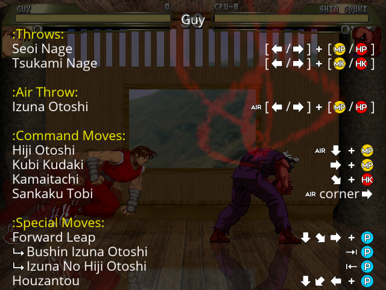
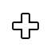
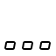
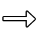
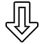
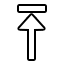
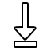
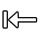
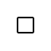

Individual characters have a specific order in which they are processed in relation to one another, determined by their MoveType or ID. Characters are processed as follows:
If two characters are in the same tier, they will be processed according to their ID, with characters with a lower ID being processed first.
For example, when both P1 and P2 are idle, P1 will be processed before P2. If P2 attacks and P1 does not, however, P2 will be processed first.
This order serves to minimize the mechanical differences between characters fighting in the left or right side of the screen.
During Arcade or Team Arcade, another player can interrupt the current run by pressing Start on a different controller. This triggers a challenger match, where the original Arcade player stays on the P1 side and the interrupting player joins as P2.
After the challenger match ends, the winner takes control of the Arcade run. They are sent back through the appropriate selection flow (Character Select for Arcade, or Team/Character Select for Team Arcade), and then the run resumes from the exact point where it was interrupted.
All Arcade progress is preserved, including match number, score, roster, and upcoming opponents. Only control of the run changes hands.
Ikemen GO accepts optional command line parameters for Quick-VS mode.
The format is (optional parameters are enclosed in square brackets):
./Ikemen_GO [player1 player2 [-s stage]]
For example, to start quick versus between players named kfm and suave, you can type:
./Ikemen_GO kfm suave
To play the same two characters in a stage named temple, type:
./Ikemen_GO kfm suave -s temple
You can specify exact .def files paths for both players and stage:
./Ikemen_GO kfm/newkfm.def suave -s stages/temple.def
Here is a list of all supported command line options:
Quick VS Options:
* -p<n> <playername>: Loads player n, eg. -p3 kfm (if missing players are loaded in order ascending)
* -p<n>.ai <level>: Sets player n's AI to \<level>, eg. -p1.ai 8
* -p<n>.color <col> / -p<n>.pal <col>: Sets player n's palette to \<col>
* -p<n>.power <power>: Sets player n's power to \<power>
* -p<n>.life <life>: Sets player n's life to \<life>
* -p<n>.lifeMax <lifeMax>: Sets player n's max life to \<lifeMax>
* -p<n>.dizzyPoints <dizzyPoints>: Sets player n's dizzy points to \<dizzyPoints>
* -p<n>.guardPoints <guardPoints>: Sets player n's guard points to \<guardPoints>
* -p<n>.input <pn>: Sets player n's controls to use \<pn>'s input settings
* -tmode1 <tmode>: Sets p1 team mode to \<tmode>
* -tmode2 <tmode>: Sets p2 team mode to \<tmode>
* -time <num>: Round time (-1 to disable)
* -rounds <num>: Plays for \<num> rounds, and then quits
* -s <stagename>: Loads stage \<stagename>. eg. -s stages/stage0.def
* -loadmotif: Quick-VS started without skipping motif, chars and stage loading
* -ip: Can be used to establish netplay connection for Quick-VS. Set IP address for peer, leave the argument blank for host
General/Debug Options:
* -h / -?: Displays help screen listing some of these parameters
* -log <logfile>: Records match data to \<logfile>
* -r <path> / -rubric <path>: Loads motif \<path>. eg. -r motifdir or -r motifdir/system.def
* -fight <path>: Loads fight screen \<path>. eg. -fight data/fight.def
* -storyboard <path>: Loads storyboard \<path>. eg. -storyboard chars/kfm/intro.def
* -config <path>: Loads \<path> config file. eg. -config save/config2.json
* -stats <path>: Loads \<path> stats file. eg. -stats save/stats2.json
* -debug: Start the match with debug mode already enabled
* -nojoy: Disables joysticks
* -nomusic: Disables music
* -nosound: Disables all sound effects and music
* -togglelifebars: Disables display of the Life and Power bars
* -maxpowermode: Enables auto-refill of Power bars
* -ailevel <level>: Changes game difficulty setting to \<level> (1-8)
* -speed <speed>: Changes game speed setting to \<speed> (10%-200%)
* -stresstest <frameskip>: Stability test (AI matches at speed increased by \<frameskip>)
* -speedtest: Speed test (match speed x100)
* -windowed: Disables fullscreen
* -setport: Overrides port number
Common files can be defined in dedicated save/config.json arrays. Files path lookup priority: character def directory, screenpack directory, lifebar directory, main ikemen directory, data directory.
CommonAir: Common animations using character's local sprites. Appended to the character's AIR data.
CommonCmd: Common commands. Appended to the character's CMD data.
CommonConst: Common constants. Appended to the character's CNS data. Can be overridden in the character's own [Constants] group.
CommonFX: CommonFx are packs of graphic and/or sound effects defined in a .def file that can be called during the match by using a specific prefix before animation and sound numbers, much like 'F' for the lifebar's fightfx. They can be used in all places where lifebar's FightFx can be used. Sample CommonFx .def file:
[Info]
prefix = MK
fx.scale = 1
localcoord = 320, 240
[Files]
sff = mk.sff
air = mk.air
snd = mk.snd
[!NOTE] The letters "F" and "S" are currently reserved and should not be used for your own prefixes.
CommonStates: Common states. These are similar to common1.cns, except they will be loaded regardless of the character's DEF file. "CommonStates": [
"data/functions.zss",
"data/action.zss",
"data/dizzy.zss",
"data/guardbreak.zss",
"data/score.zss",
"data/tag.zss",
"data/training.zss"
],
Ikemen's corner push slightly differs from Mugen's. Instead of only being checked at the moment a hit connects, the velocity offset is now saved and will only be applied when the target reaches the corner. This means hitting an opponent that's a bit away from the corner can still inflict corner push on the player, unlike Mugen. This change should in theory not break any Mugen characters, so it skips backward compatibility checks.
In addition, if the character has IkemenVersion, the corner push friction will depend on what the target is doing (standing, crouching, etc) like a regular hit would, instead of using a fixed, arbitrary value.
Ikemen GO offers common solution for Dizzy mechanics, often found in commercial games.
When this feature is enabled in options, the character loses Dizzy Points by receiving damage. Once there are no Dizzy Points left, the character goes into Dizzy state (short stun period in which they are vulnerable).
Dizzy functionality can be adjusted via data/dizzy.zss file. Individual states listed there can be overridden by adding them to character's own code, and the negative states can be disabled on a per-character basis, by setting Default.Enable.Dizzy to 0 in character's CNS file under [Constants] section.
Exact Dizzy Points damage value can be assigned directly in HitDef, via optional dizzypoints parameter. If omitted, it defaults to hit_damage (from HitDef damage parameter) multiplied by the value of Default.LifeToDizzyPointsMul / Super.LifeToDizzyPointsMul specified in data/common.const.
Dizzy Points will start to recover, if character menages to avoid pressure (blocking and receiving damage) for a while.
Amount of Dizzy Points to start with can be set via dizzypoints parameter under character's cns [Data] section. If omitted, it defaults to Life parameter.
Dizzy Points can be optionally visualized by meter, via lifebar [StunBar] section. Being strucked increases the meter (full stun meter means that the character has no Dizzy Points left and is forced to Dizzy state)
State numbers reserved by Ikemen GO Dizzy implementation, as defined in common.const:
; dizzy.zss states
StateDizzy = 6565300
StateDizzyFallDown_standCrouch = 6565301
StateDizzyFallDown_air = 6565302
StateDizzyLyingDown = 6565303
StateDizzyBirdsHelper = 6565310
By default Ikemen GO supports following game modes:
arcade) fight against AI-controlled opponents in a customizable arcade ladderteamarcade) team of fighters fights against AI-controlled opponents in a customizable arcade ladderteamcoop) team up with other player(s) against AI-controlled opponents in a customizable arcade ladderversus) choose a fighter to defeat a player controlled opponentteamversus) choose a team of fighters to defeat team of player controlled opponentsversuscoop) team up with other player(s) to defeat co-op team of player controlled opponentsfreebattle) practice your skills against AI controlled CPU character(s) of your choicestorymode) follow story mode arcs designed for this mugen game (for this mode to show up in main menu at least 1 arc needs to be assigned under [StoryMode] group in select.def)netplayversus) choose fighter(s) to defeat online player controlled opponent(s)netplayteamcoop) team up with online player against AI-controlled opponents in a customizable arcade laddernetplaysurvivalcoop) defeat as many opponents as you can in a row with an online player controlled teammatetraining) practice special attacks and combos with a customizable AI-controlled opponenttimeattack) fight against AI-controlled opponents in a customizable arcade ladder, beating previous time recordssurvival) defeat as many opponents as you can on a single Health Metersurvivalcoop) defeat as many opponents as you can with a player controlled teammate, on a single Health Meterbossrush) defeat all bosses in a row (for this mode to show up in main menu at least 1 character needs boss = 1 parameter set in select.def)bonusgames) - defeat selected bonus character (for this mode to show up in main menu at least 1 character needs bonus = 1 parameter set in select.def)watch) watch CPU controlled match of your choicerandomtest) watch endless CPU controlled matches (unlike demo that triggers in main menu, this mode is not completely random, matches results are saved to save/autolevel.save file, which grades characters AI based on how they performed against each other)replay) watch saved replays of your online matchesoptions) adjust game settingsWhich modes are selectable in-game and how they are orginized is adjustable via screenpack.
In MUGEN, each character has access to three special, global states, numbered -1, -2, and -3. These states are constantly executed without the character having to be in them.
State -1 generally contains state controllers that determine state transition rules based on user input (commands) or CPU instructions (AI).
State -2 contains other state controllers that need to be checked every tick.
State -3 contains state controllers which should be checked every tick unless the player is temporarily using another player's state data (for instance, when the player is being thrown).
Once declared in one file, these states can't be assigned again in different file.
If the character is a "helper", i.e. spawned by the Helper state controller, it will not have access to states -2 and -3. The helper will not access state -1 either, unless it has keyctrl parameter enabled.
Ikemen GO works similarly, but allows for more flexibility. Each negative state can have multiple Statedef declarations across multiple files, appending each on top of existing ones. This allows, for example, using the common1.cns file for global code that affects all characters that reference it.
Ikemen GO also allows helpers to access states -2 and -3 through the keyctrl parameter.
Most notably, Ikemen GO also offers 2 new global states:
* StateDef -4: This state functions like State -2, except that is not halted by Pause/SuperPause and can be used by helpers without any limitations (even if keyctrl is set to 0).
* StateDef +1: This state functions like State -4, except that it is processed after the character's current state. This allows some checks that are not possible in negative states.
States in Ikemen GO are processed in this order: -4, -3, -2, -1, normal states, +1
Global state execution quick reference State | Pause | Custom State | Helper States --- | :---: | :---:| :---: -4 | ✔️ | ✔️ | ✔️ -3 | ❌ | ❌ | ❌ -2 | ❌ | ✔️ | ❌ -1 | ❌ | ❌ | ❌ +1 | ✔️ | ✔️ | ✔️
Ikemen GO offers common solution for Guard Break (Guard Crush) mechanics, often found in commercial games.
When this feature is enabled in options, the character loses Guard Points by blocking attacks. Once there are no Guard Points left, the character goes into Guard Break state (short stun period in which they are vulnerable).
Guard Break functionality can be adjusted via data/guardbreak.zss file. Individual states listed there can be overridden by adding them to character's own code, and the negative states can be disabled on a per-character basis, by setting Default.Enable.GuardBreak to 0 in character's CNS file under [Constants] section.
Exact Guard Points damage value can be assigned directly in HitDef, via optional guardpoints parameter. If omitted, it defaults to hit_damage (from HitDef damage parameter) multiplied by the value of Default.LifeToGuardPointsMul / Super.LifeToGuardPointsMul specified in data/common.const.
Guard Points will start to recover, if character menages to avoid pressure (blocking and receiving damage) for a while.
Amount of Guard Points to start with can be set via guardpoints parameter under character's cns [Data] section. If omitted, it defaults to Life parameter.
Guard Points can be optionally visualized by meter, via lifebar [GuardBar] section. Blocking attacks decreases the meter (empty guard meter means that the character has no Guard Points left and is forced to Guard Break state)
State numbers reserved by Ikemen GO Guard Break implementation, as defined in common.const:
; guardbreak.zss states
StateGuardBreakHit = 6565400
StateGuardBreakRecover = 6565401
The config.ini file allows setting some extra input options.
Mugen's input parser can be erratic when it comes to input delay. This delay, however, can make pressing two buttons simultaneously easier to do than in a classic arcade fighting game. Because many players are used to this extra leniency, Ikemen GO offers the option to delay button presses by a single frame to make simultaneous button presses easier to perform as in Mugen.
ButtonAssist = 1
This setting allows defining how you want SOCD (simultaneous opposing cardinal directions) to be resolved by the engine. In other words, you can define what should happen if a player presses forward and back or up and down simultaenously.
0 = No resolution
Allows pressing both directions at the same time. Mugen behavior.1 = Last input priority
Only the last direction is registered.2 = Absolute priority
F has priority over B. U has priority over D.3 = First direction priority
Only the first direction is registered.4 = Deny either direction
Nothing happens. Ikemen behavior up until version 0.99. Default behavior.
Currently this feature only works in offline play. During netplay type 4 is enforced.
SOCDResolution = 4
In Mugen, characters will check if they should start guarding before processing their states. This makes it so that a character is unable to guard in the same frame where they return to an idle state, and wrongly makes them able to guard in the first frame of an attack.
In Ikemen GO, a character's states will be processed before checking if the character should start guarding. This allows a character to guard in the same frame that they return to an idle state. This is similar to most fighting games, but the opposite of what Mugen did.
Because of this change and to maintain backward compatibility, Mugen characters (without ikemenversion) inflict +1 "hittime" in every Hitdef.
[!NOTE] For these reasons, frame data scripts developed for Mugen may be off by 1 frame when used in Ikemen GO.
IKEMEN GO uses SDL's GameController system for gamepads. SDL turns your device's raw hardware inputs into a standardized controller layout (A/B/X/Y, Back/Start, L1/R1, etc.) using a mapping database.
That means there are two separate layers you can change:
1) IKEMEN GO bindings (what action Light Kick / Menu / etc. is bound to)
2) SDL controller mapping (what your physical button is considered: A vs B vs X vs Y, which axis is "left stick", etc.)
Use this when the controller works and the buttons are basically correct, but you want different actions.
This does not fix a controller whose physical buttons are being interpreted as the wrong SDL buttons.
Use this when:
SDL mappings are stored/overridden here:
external/gamecontrollerdb.txt1) Connect the controller * Plug it in and make sure the OS sees it (see troubleshooting if needed).
2) Generate an SDL mapping line
* Use the SDL Gamepad Tool:
https://generalarcade.com/gamepadtool/
* Follow the prompts and copy the resulting single-line mapping string.
3) Add/replace the mapping in IKEMEN GO
* Open: external/gamecontrollerdb.txt
* Paste the mapping on a new line.
* If a line already exists for the same device, remove the old one (duplicates can cause confusing results).
* Save.
4) Restart IKEMEN GO * Fully close and re-open.
5) Rebind actions (optional) * Back to Options → Input Settings → Joystick Config to bind game actions.
If your mapping is accepted into SDL's community database, future Ikemen GO builds (that always ship latest SDL mappings) will recognize your controller without manual edits.
Submit here: https://github.com/mdqinc/SDL_GameControllerDB
Include:
* the mapping line from the tool
* adapter/controller name (example: "SANWA SUPPLY JY-PSUAD2 + DUALSHOCK 2")
* platform (Windows)
Steam can apply Desktop / Non-Game Controller Layouts to your controller even if IKEMEN GO isn't launched through Steam. This commonly causes: * wrong actions from face buttons in-game (e.g. "A" sometimes triggers Taunt) * extra/double inputs in menus (mapping jumps to the next item and overwrites) * generally "bananas" UI behavior
Fix 1. Open Steam → Settings → Controller 2. Find Non-Game Controller Layouts 3. Open Desktop Layout (and any other non-game layouts you use) 4. Set to Disabled / empty bindings (or disable Steam Input for that layout) 5. Restart IKEMEN GO
IKEMEN GO can rate-limit analog-axis menu scrolling via config.ini:
[Input]
; Dead time (in ms) used to limit gamepad analog-axis scrolling behavior.
AnalogDeadTime = 20
````
* Increase it if menus "skip" entries (try **50–150**).
* Decrease it if you want faster analog scrolling.
---
### 3) SDL Gamepad Tool doesn't detect the controller
1. Verify Windows sees it:
* **Win+R → `joy.cpl`** (Game Controllers)
2. Try a different USB port (prefer USB 2.0) and avoid unpowered hubs.
---
### 4) "Stuck axis" during joystick config (AxisSkip)
Some adapters report an axis as permanently held (often triggers). If IKEMEN GO logs lines like:
```txt
[input_glfw.go][checkAxisForTrigger] 1.AXIS joy=0 i=2 s:-5 axes[i]=-1, name =
Note the number after i= (example: 2). Then edit your line in external/gamecontrollerdb.txt and add an AxisSkip tag inside the controller name field.
Pattern:
...,My Controller,platform:Windows,......,My Controller AxisSkip_2,platform:Windows,...If another stuck axis appears later (e.g. i=5), append it:
* My Controller AxisSkip_2_5
Repeat until the stuck-axis messages stop.
The native juggle system used by characters behaves slightly differently from Mugen if the character has ikemenversion. It will generally behave in a more predictable way. The following changes are present:
Juggle points will be evaluated even if the enemy is not yet a target of the player
Juggle points will not be evaluated if the enemy is not in a falling state
In addition, when a StateDef is not movetype = A, its juggle parameter will default to 0 rather than inheriting the previous state's value. This behavior currently does not require ikemenversion.
Ikemen GO's pause menu allows viewing character's input commands during the game. The command data has to be assigned via th character's DEF file, under the [Files] section, using the new movelist parameter.
The implementation is similar to the command.dat format from MAME (the same concept, just with additional align and colors syntax, and more intuitive glyph naming conventions).
Here is an example movelist declaration:
<#f0f000>:Throws:</>
Seoi Nage [_B/_F]_+[^MP/^HP]
Tsukami Nage [_B/_F]_+[^MK/^HK]
<#f0f000>:Air Throw:</>
Izuna Otoshi _AIR[_B/_F]_+[^MP/^HP]
<#f0f000>:Command Moves:</>
Hiji Otoshi _AIR_D_+^MP
Kubi Kudaki _F_+^MP
Kamaitachi _DF_+^HK
Sankaku Tobi _AIRcorner_F
<#f0f000>:Special Moves:</>
Forward Leap _D_DF_F_+^P
_!Bushin Izuna Otoshi _)^P
_!Izuna No Hiji Otoshi _(^P
Houzantou _D_DB_B_+^P
Which, with default screenpack and art resources distributed with the engine, is automatically converted to look like this in-game:

A movelist.dat file is a normal text file in which text can be mixed with image references (known as glyphs). Declared glyphs (by default prefixed with _ and ^, followed by uppercase letters or symbols) are swapped with appropriate images scaled to match the font height. Enclosing a portion of text between <#hex_rgba></> (where hex_rgba is an HTML-style RGBA hex color, such as #ffffffff) changes text color. Text alignment can be adjusted in each line via TAB key (none = left align, 1 TAB = text centered, 2 or more = right align). Other than that, the file's text is rendered exactly as-is.
Refer to chars/kfm/movelist.dat for another example of movelist declaration.
Glyph sprits in an SFF file are expected to have the offsets: x = 0, y = sprite height. It is recommended to use a resolution of 64x64 for glyphs. New glyphs can be added into an SFF file and declared via a screenpack DEF file under the new [Glyphs] section, using the following format:
glyphTextRef = spriteGroup, spriteIndex
Below is an example declaring two new glyphs, ^3P and _QCF:
[Glyphs]
^3P = 64, 0
_QCF = 109, 0
Refer to the [Menu] section in the screenpack's DEF file distributed with the engine (data/system.def) for a list of parameters that can be used to adjust fonts, scale, positioning etc.
Below is a list of all the glyphs included with Ikemen GO by default:
| Image | Glyph | Sprite | Comment |
|---|---|---|---|
| ^A | 1, 0 | A | |
| ^B | 2, 0 | B | |
| ^C | 3, 0 | C | |
| ^D | 4, 0 | D | |
| ^W | 23, 0 | W | |
| ^X | 24, 0 | X | |
| ^Y | 25, 0 | Y | |
| ^Z | 26, 0 | Z | |
 | _+ | 39, 0 | + (press at the same time as previous button) |
 | _. | 40, 0 | ... |
| _DB | 41, 0 | Down-Back | |
| _D | 42, 0 | Down | |
| _DF | 43, 0 | Down-Forward | |
| _B | 44, 0 | Back | |
| _F | 46, 0 | Forward | |
| _UB | 47, 0 | Up-Back | |
| _U | 48, 0 | Up | |
| _UF | 49, 0 | Up-Forward | |
| ^S | 51, 0 | Start | |
| ^M | 52, 0 | Menu (Select/Back) | |
| ^P | 53, 0 | Any Punch (X / Y / Z) | |
| ^K | 54, 0 | Any Kick (A / B / C) | |
| ^LP | 57, 0 | Light Punch (X) | |
| ^MP | 58, 0 | Medium Punch (Y) | |
| ^HP | 59, 0 | Heavy Punch (Z) | |
| ^LK | 60, 0 | Light Kick (A) | |
| ^MK | 61, 0 | Medium Kick (B) | |
| ^HK | 62, 0 | Heavy Kick (C) | |
| ^3K | 63, 0 | 3 Kick (A+B+C) | |
| ^3P | 64, 0 | 3 Punch (X+Y+Z) | |
| ^2K | 65, 0 | 2 Kick (A+B / B+C / A+C) | |
| ^2P | 66, 0 | 2 Punch (X+Y / Y+Z / X+Z) | |
 | _- | 90, 0 | Arrow (tap following Button immediately - use in combos) |
| _! | 91, 0 | Continue Arrow (follow with this move) | |
| ~DB | 92, 0 | hold Down-Back | |
 | ~D | 93, 0 | hold Down |
| ~DF | 94, 0 | hold Down-Forward | |
| ~B | 95, 0 | hold Back | |
| ~F | 96, 0 | hold Forward | |
| ~UB | 97, 0 | hold Up-Back | |
| ~U | 98, 0 | hold Up | |
| ~UF | 99, 0 | hold Up-Forward | |
| _HCB | 100, 0 | 1/2 Circle Back | |
| _HUF | 101, 0 | 1/2 Circle Forward Up | |
| _HCF | 102, 0 | 1/2 Circle Forward | |
| _HUB | 103, 0 | 1/2 Circle Back Up | |
| _QFD | 104, 0 | 1/4 Circle Forward Down | |
| _QDB / _QCB | 105, 0 | 1/4 Circle Down Back | |
| _QBU | 106, 0 | 1/4 Circle Back Up | |
| _QUF | 107, 0 | 1/4 Circle Up Forward | |
| _QBD | 108, 0 | 1/4 Circle Back Down | |
| _QDF / _QCF | 109, 0 | 1/4 Circle Down Forward | |
| _QFU | 110, 0 | 1/4 Circle Forward Up | |
| _QUB | 111, 0 | 1/4 Circle Up Back | |
| _FDF | 112, 0 | Full Clock Forward | |
| _FUB | 113, 0 | Full Clock Back | |
| _FUF | 114, 0 | Full Count Forward | |
| _FDB | 115, 0 | Full Count Back | |
| _XFF | 116, 0 | 2x Forward | |
| _XBB | 117, 0 | 2x Back | |
| _DSF | 118, 0 | Dragon Screw Forward | |
| _DSB | 119, 0 | Dragon Screw Back | |
| _AIR | 121, 0 | AIR | |
| _TAP | 122, 0 | TAP | |
| _MAX | 123, 0 | MAX | |
| _EX | 124, 0 | EX | |
 | _^ | 127, 0 | Air |
 | _= | 128, 0 | Squatting |
| _) | 129, 0 | Close | |
 | _( | 130, 0 | Away |
 | _` | 135, 0 | Small Dot |
| _CHARGE | 136, 0 | Charge | |
| _HOLD | 137, 0 | Hold | |
| _RELEASE | 138, 0 | Release | |
| _MASH | 139, 0 | Mash | |
| _CLOSE | 140, 0 | Close | |
| _FAR | 141, 0 | Far | |
| _AIROK | 142, 0 | AIR OK | |
| _THROW | 143, 0 | Throw | |
| _COUNTER | 144, 0 | Counter |
When a Mugen character is loaded, the clipboard will print a message indicating which compatibility mode the character is using (WinMugen, 1.0 or 1.1). This is important because the behavior of some state controllers may change according to it.
Ikemen GO supports playback of MIDI files with use of a soundfont (.sf2) file. This file is not included in Ikemen GO by default, but can be supplied by placing a soundfont.sf2 file into the sound directory.
Ikemen GO supports 2 more button assignments: d and w. By default they're declared in common.cmd file and are used by common tag code (tag.zss) to switch tag team players.
In Ikemen GO there are no dedicated servers, one player hosts and the other connects. Ikemen's netcode is your typical delay-based netcode. Because of how peer-to-peer netplay works (the engine only sends inputs and waits to the other player to receive them), both players essentially need the same game and configuration (all options from Game Settings and Engine Settings should not differ, e.g. speed, life, time etc. Video, Audio, and Input settings can be unique to each game since they don't affect gameplay)
The host never has to enter anything in the IP window when attempting netplay; the peer, however, needs to enter the host's public IP. By default, simply doing that won't work, even with Ikemen Go being allowed through the firewall.
A common solution is for the host to forward port 7500 (or whatever port they want to use, most people leave it at the default of 7500) through their router settings; doing so allows the peer to enter the host's public IP when connecting and all should be good. Be aware that the peer does not need to port forward, just the host.
The process can be streamlined by using VLAN/LANbridgers/tunneling software like Hamachi and Radmin. Both players will need to install the same software and occupy the same room/lobby/whatever, with the peer entering the host's IP address as assigned by the software (instead of sharing their public IP).
If this has all been done correctly and you're still not able to connect, make sure Ikemen GO and the VLAN are allowed through your firewall. Also try swapping who's hosting, as sometimes people aren't able to host, but can connect just fine.
However, it's possible to open multiple instances and play online.
You can setup a Hamachi LAN which allows people in your Hamachi network to connect to your LAN server via Hamachi connection.
Setup 1. Get your friends to join your Hamachi network. (Network>Join an existing network...)
Host 1. Set the Hamachi options and open the LAN network. 2. Distribute the virtual IPv4 (IP) address in the 25.x.x.x range to the other players; this can be done over Hamachi's chat window or another chat method. 3. Start IKEMEN and go to "Network". 4. Press "Host Game" and wait for your opponent to join.
Other Players 1. Start IKEMEN and go to "Network". 2. Press "Join Game" and "New Address" (if it's the first time you're connecting to this opponent) 3. Enter the opponent name into IKEMEN. Press Enter. 4. Type in virtual IPv4 (IP) address that you've received from your oppoent. Press Enter. You are now done adding in your opponent to your list of names to connect to. 5. The network game will start after selecting the player's name that is currently hosting a game.
Ikemen GO expands Mugen versus screen order switching system with a more advanced implementation inspired by commercial games, such as King of Fighters and Capcom vs SNK 2.
To maintain backward compatibility with Mugen screenpacks, by default the new system visually doesn't differ from normal versus screen, with all action buttons being set to confirm currently selected order. To enable full order select functionality, appropriate parameters needs to be added into your screenpack system.def file. Refer to data/system.base.def [VS Screen] section for a full list of available order parameters.
After assembling your team (all team modes are valid), you can change your team order before each match start loading. The order switching is achieved by pressing buttons associated with particular team position (for example A, B, X, Y), until you select all fighters in your team (with last team member being selected automatically). For CPU controlled side, order selection is randomized.
You can press skip button (Start by default) at any time to stop changing the order. In such case your remaining team slots will be filled in the order the characters were originally selected. Optionally additional timer can be implemented to limit amount of time player has for making the order decision.
Screenpack can be set to display visual feedback how many team members still needs to be selected, but the exact order position fighters occupy is revealed only when both sides confirm their order (which results in characters portraits and icons changing to optional done variant, with portraits and names positioning adjusted in order of selected team members).
By default Order Select system is enabled in following game modes: arcade, bossrush, freebattle, netplayversus, survival, timeattack, versus. Order Select can be also disabled on per team side basis - if team consist of only a single character, or if it's disabled by appropriate launchFight function argument.
Game modes that have certain goal to achieve log data of your achievements forming high score tables (rankings). Depending on game mode goal, different data is displayed in ranking tables: total score, time to clear the mode, amount of enemies beaten. By default there are 10 logged results rendered in ranking. Scoring better than the worst logged result allows player to enter his or her name during ranking screen and the result is being logged in the save/stats.json file. Playthrough assisted with debug keys is not logged for future use.
How rankings look like can be adjusted via [Hiscore Info] screenpack section (refer to default system.def distributed with engine for a working example).
Rankings are displayed in following situations:
- in modes that can be "cleared" when there are no more matches left (either due to losing and not having any credits left, or finishing whole mode), after results screen
- as part of the attract mode loop
- by pressing start button when any of the modes that produces rankings is higlighted in main menu (needs at least 1 hiscore data already logged, key can be changed or disabled via menu.hiscore.key parameter under screenpack [Title Info])
Ikemen GO offers common solution for Red Life mechanics, often found in commercial games with Tag mode.
When this feature is enabled in options, characters utilize a Red Life bar in addition to their regular Life bar.
Red Life measures how much life a character can recover under the right conditions. Its working principle is that characters start each round with their secondary Red Life bar set to the same value as their maximum Life. Whenever a character takes damage, a percentage of it is subtracted from their Red Life. When the character is resting, their Life recovers slowly until it is the same as their Red Life. Life regeneration implementation can be adjusted via data/tag.zss file.
Exact Red Life value can be assigned directly in HitDef, via optional redlife parameter. If omitted, it defaults to hit_damage (from HitDef damage parameter) multiplied by the value of Default.LifeToRedLifeMul (for normal and special attacks) or Super.LifeToRedLifeMul (for hyper attacks) specified in data/common.const. TargetLifeAdd by default also affects Red Life and is multiplied by this constant.
Dedicated state controllers can be used to manually control red life value: TargetRedLifeAdd, RedLifeAdd, RedLifeSet.
Red Life can be optionally visualized under [LifeBar] section, via pX.red element. Since life recovery happens (by default) only when character is tagged out, visualizing Red Life only makes sense for [Tag LifeBar] section and its variants.
Configuration, game stats, replays and error logs are stored in the save directory.
Ikemen GO has in-engine support for scores that is flexible enough to allow creating both Capcom vs SNK 2 style GP System (float values, same move affecting both attacker's and opponent's score) as well as traditional Street Fighter style scores. Values can be assigned directly in HitDef sctrl, scores are remembered between matches, lifebar def file has now [Score] section, where you can adjust how it will be rendered in-game.
By default the engine is also distributed with score.zss file, which contains global code that works for all characters without patching, implementing default score rewards (HitDef score assignment prevents default score reward for damage dealt).
The default score reward system is easy to edit (score.zss has self-explanatory code, thanks to the extensive use of dedicated triggers and named maps), follows score rewards known from classic Capcom fighting games (designed after Street Fighter Alpha 3, tracks everything that game gave score rewards for, using roughly the same values), and is tied to damage in order to give comparable results to all mugen characters.
I.K.E.M.E.N-Go supports OpenGL shaders written as paired .frag and .vert files. The .frag and .vert must be identically named and are case-sensitive on UNIX platforms. OpenGL 2.1 (#version 120), OpenGL 3.2 (#version 150) and Vulkan 1.3 (SPIR-V) are supported; keep in mind shaders written for one platform may not support the other unless the differences are properly accounted for. The default shaders included with the engine include support for both OpenGL 2.1, OpenGL 3.2 and Vulkan 1.3(SPIR-V compiled from glsl version 450) so it is recommended that you study these default shaders for reference when converting or writing your own shaders for the engine.
Ikemen GO does not support on the fly compilation of SPIR-V shader from glsl file. You will have to compile your own shaders into SPIR-V in order to use them in Vulkan. Install Vulkan SDK and use the following commands to compile glsl shaders to SPIR-V.
glslc -fshader-stage=vert shader.vert.glsl -o shader.vert.spv -std=450
glslc -fshader-stage=frag shader.frag.glsl -o shader.frag.spv -std=450
For more information on writing OpenGL shaders, please read the official Khronos documentation for the OpenGL shading language. Specifically, the Core Language Specification may be of particular interest.
Select the shaders in the options menu (or add them in config.ini) in the order you want them processed.
IKEMEN GO allows users to replace the default sprite rendering shader src/shaders/sprite.frag.glsl with custom fragment shaders. This enables advanced visual effects like spatial distortion, dynamic glows, and normal mapping on a per character or per effect basis. Characters can load their own custom shaders via their .def files.
In addition to the standard variables provided by the default shader, custom shaders have access to several unique variables:
float iTime:
Indicates the tick of seconds since the game started. The value is equivalent to GameTime / 60.0.
float sTime:
Represents the tick of frames since the shader was applied. The count automatically stops when the game enters a pause or pause state.
vec2 iResolution:
The current rendering resolution of the game.
float aspectRatio:
Normally 1.0. If the aspect ratio is changed (e.g., via the pause menu), this value changes accordingly.
sampler2D bgl_RenderedTexture:
Stores the texture obtained from the back buffer (the screen behind the sprite) at the exact moment the shader is called.
Note: The engine parses the shader file for the exact string "bgl_RenderedTexture". If it is found, the GrabPass process is executed. Because this operation is performance heavy, be aware that the capture will occur even if the string is commented out in your shader code.
sampler2D tex1, tex2:
Custom textures or animations passed from state controllers. Useful for normal maps, masks, or displacement maps.
float p0 to p15:
Dynamic parameters passed from CNS/ZSS state controllers using shaderparam.pX = value.
//When converting to SPV, specify version 450
//#version 450 core
#if __VERSION__ >= 450
// VULKAN PATH
#define COMPAT_TEXTURE texture
layout(binding = 1) uniform UniformBufferObject {
vec4 x1x2x4x3;
vec4 tint;
vec3 add;
vec3 mult;
float alpha, gray, hue;
int mask;
bool isFlat, isRgba, isTrapez, neg;
float iTime;
vec2 iResolution;
float aspectRatio;
float sTime;
};
layout(push_constant, std430) uniform u {
vec4 palUV;
float p0, p1, p2, p3, p4, p5, p6, p7;
float p8, p9, p10, p11, p12, p13, p14, p15;
};
layout(binding = 2) uniform sampler2D tex;
layout(binding = 3) uniform sampler2D pal;
// Specifying the name of the bgl_texture to be used for GrabPass processing will execute the process of creating a BackBuffer
// Do not specify the name of the bgl_texture if you do not use a BackBuffer
layout(binding = 5) uniform sampler2D tex1;
layout(binding = 6) uniform sampler2D tex2;
layout(location = 0) in vec2 texcoord;
layout(location = 0) out vec4 FragColor;
#else
// OPENGL / GLES PATH
#define COMPAT_VARYING in
#define COMPAT_TEXTURE texture
#ifdef GL_ES
precision highp float;
precision highp int;
#endif
out vec4 FragColor;
uniform sampler2D tex;
uniform sampler2D pal;
// Specifying the name of the bgl_texture to be used for GrabPass processing will execute the process of creating a BackBuffer
// Do not specify the name of the bgl_texture if you do not use a BackBuffer
uniform sampler2D tex1;
uniform sampler2D tex2;
uniform vec4 x1x2x4x3;
uniform vec4 tint;
uniform vec3 add, mult;
uniform float alpha, gray, hue;
uniform int mask;
uniform bool isFlat, isRgba, isTrapez, neg;
uniform float p0, p1, p2, p3, p4, p5, p6, p7;
uniform float p8, p9, p10, p11, p12, p13, p14, p15;
uniform float iTime;
uniform vec2 iResolution;
uniform float aspectRatio;
uniform float sTime;
COMPAT_VARYING vec2 texcoord;
#endif
vec3 rgb2hsv(vec3 c)
{
vec4 K = vec4(0.0, -1.0 / 3.0, 2.0 / 3.0, -1.0);
vec4 p = mix(vec4(c.bg, K.wz), vec4(c.gb, K.xy), step(c.b, c.g));
vec4 q = mix(vec4(p.xyw, c.r), vec4(c.r, p.yzx), step(p.x, c.r));
float d = q.x - min(q.w, q.y);
float e = 1.0e-10;
return vec3(abs(q.z + (q.w - q.y) / (6.0 * d + e)), d / (q.x + e), q.x);
}
vec3 hsv2rgb(vec3 c)
{
vec4 K = vec4(1.0, 2.0 / 3.0, 1.0 / 3.0, 3.0);
vec3 p = abs(fract(c.xxx + K.xyz) * 6.0 - K.www);
return c.z * mix(K.xxx, clamp(p - K.xxx, 0.0, 1.0), c.y);
}
vec3 hue_shift(vec3 color, float dhue) {
vec3 colorhsv = rgb2hsv(color);
colorhsv.x = mod(colorhsv.x+dhue, 1.0);
return hsv2rgb(colorhsv);
}
vec4 GetIkemenPixel(vec2 uv) {
vec4 c;
vec3 neg_base = vec3(1.0);
vec3 final_add = add;
vec4 final_mul = vec4(mult, alpha);
// Select flat color or textures
if (isFlat) {
c = tint;
// Treat flat colors like RGBA for math consistency
neg_base *= c.a;
final_add *= c.a;
final_mul.rgb *= alpha;
} else {
//vec2 uv = texcoord;
if (isTrapez) {
vec2 bounds = mix(x1x2x4x3.zw, x1x2x4x3.xy, uv.y);
float gap = bounds[1] - bounds[0];
#ifdef GL_ES
if (abs(gap) < 0.0001) gap = 0.0001;
#endif
uv.x = (gl_FragCoord.x - bounds[0]) / gap;
}
c = COMPAT_TEXTURE(tex, uv);
// Select with or without palette
if (isRgba) {
if (mask == -1) c.a = 1.0;
neg_base *= c.a;
final_add *= c.a;
final_mul.rgb *= alpha;
} else {
// Palette lookup
#if __VERSION__ >= 450
c = COMPAT_TEXTURE(pal, vec2(palUV[0]+palUV[2]*c.r*0.9966, palUV[1]));
#else
c = COMPAT_TEXTURE(pal, vec2(c.r*0.9966, 0.5));
#endif
if (mask == -1) c.a = 1.0;
}
}
// Apply PalFX
// Hue
if (hue != 0.0) {
c.rgb = hue_shift(c.rgb, hue);
}
// Invertall
if (neg) {
c.rgb = neg_base - c.rgb;
}
// Color
c.rgb = mix(vec3((c.r + c.g + c.b) / 3.0), c.rgb, 1.0 - gray);
// Add
c.rgb += final_add;
// Mul
c *= final_mul;
// Apply tint
// Sprites only, because flat colors are already tinted
if (!isFlat) {
c.rgb = mix(c.rgb, tint.rgb * c.a, tint.a);
}
return c;
}
// ----------------------
void main() {
vec2 uv = texcoord;
vec4 baseColor = GetIkemenPixel(uv);
FragColor = baseColor;
}
New team mode option meant to be used with CNS/ZSS code that implements Tag system. The engine is distributed with data/tag.zss file, containing global tag code that works for all characters without patching. Individual states from this file can be overridden by adding them to character's own code, and the negative states can be disabled on a per-character basis, by setting Default.Enable.Tag to 0 in character's CNS file under [Constants] section.
TeamMode trigger recognizes this team mode as Tag. Unlike Simul mode, AI of the characters controlled by the player side is disabled.
To enable Tag Mode option add following line to screenpack DEF file, under [Select Info]:
teammenu.itemname.tag = Tag ;or other name that you want to display in team selection screen
Ikemen GO is distributed with barebones implementation of tag system that by default allows players to switch only when point character is having control, staying on the ground, and is not being hit. This code can be used as a base code for custom tag implementations.
If you're using some other tag system, default zss file assignment in CommonStates should be removed from config.json (or replaced with another CNS/ZSS file that handles this task, if the external tag system is meant to be installed this way - refer to readme file distributed with tag system of your choice)
State numbers reserved by Ikemen GO tag implementation, as defined in common.const:
; tag.zss states
StateTagEnteringScreen = 6565600
StateTagLeavingScreen = 6565610
StateTagWaitingOutside = 6565611
StateTagJumpingIn = 6565620
StateTagLanding = 6565621
Most non-fatal errors that aren't printed to the in-game console will be printed to the command line. Errors such as unknown parameters in CNS, missing sprites or missing BGM files. For this reason it's advised to check it while debugging content.
ZSS (Zantei State Script), added in IKEMEN GO, is a state description format that can be used instead of CNS. The basic structure is the same as CNS, but the syntax is significantly different.
Almost all CNS descriptions can be replaced with ZSS, and local variables and functions can be used as features that are not available in CNS. ZSS could be useful for the people who: * Feel that the CNS format is redundant. * Want to compress or reuse code. * Don't like to describe complicated processes many times. * Have programming experience.
For a reference, check out kfm_zss character and the default ZSS files distributed with the engine, located in data directory.
Full ZSS documentation is available here: https://github.com/ikemen-engine/Ikemen-GO/wiki/ZSS